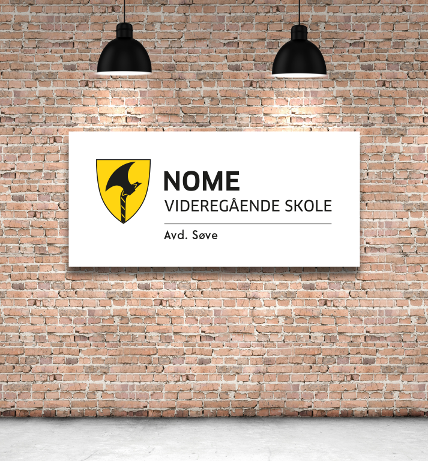
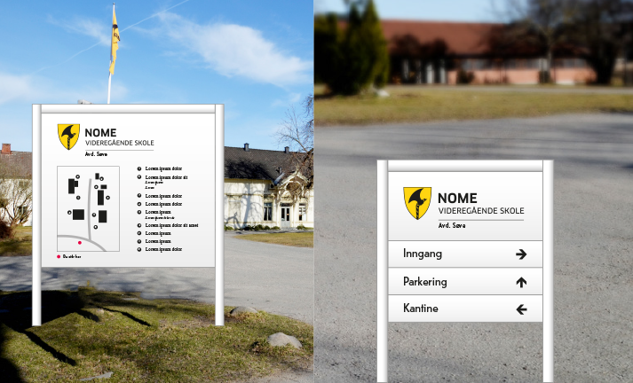
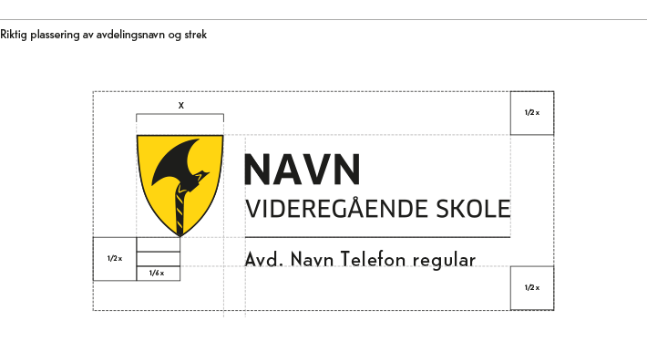
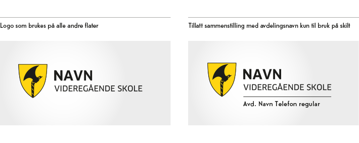

Skilt
Det er et rent og enkelt prinsipp for skilting. Skiltene skal gjøre informasjon om bygget lett tilgjengelig. Samtidig skal de profilere Telemark fylkeskommune.
Utvendig skilt skal alltid bestå av full logo med fylkesvåpen og navnetrekk. Profilfonten Telefon brukes på all tekstinfo. Informasjon på skiltet skal ikke skrives med store bokstaver.
Skilt har naturligvis ulike størrelser og formater. Her må det tilpasses individuelt. Det er viktig å se til at logoen har tilstrekkelig luft rundt seg. Regelen for avstand rundt logo gir eksakte marger for plassering på skiltmateriell.
Alle ordinære skilt skal ha logo med profilfarge og sort typografi på hvit bakgrunn.
{kind=link}
Skilt med avdelingsnavn
På enkelte skilt vil det noen ganger være behov for å synliggjøre avdeling i forbindelse med logo. Det er definert et oppsett for å sikre konsekvent framstilling av avdelingsnavn. Oppsettet må ikke erstatte logo-originalen forøvrig, dette er kun til bruk på skilt.
Det legges til en strek på linje med skjoldets underkant. Bredden følger typografiens totale lengde. Tykkelsen på streken tilsvarer streken rundt skjoldet. Dette er et generisk oppsett, der avdelingsnavnet skrives med profilfonten Telefon. Det er ikke tillatt med egne fonter.
Original lages av profesjonell grafiker.
   Kulturminneskilt
Kulturminneskilt plasseres tidvis i kontekster hvor natur- og kulturlandskapet er sårbart for visuelle forstyrrelser. Et skilt kan, selv om det er satt opp i beste mening, utgjøre en slik forstyrrelse. Det er derfor ikke alltid hensiktsmessig å sette Telemark fylkeskommunes grafiske profil «foran» landskapsrommets kvaliteter. Formidlingsbudskapet og omgivelsenes karakter skal alltid ha førsteprioritet ved utforming av kulturminneskilt, hvor grafisk utforming bør ha et samspill med landskapsrommet (farger, naturtyper, terreng, byggematerialer på freda hus osv).
Man står relativt fritt i forhold til materialvalg og layout på skilt. Det må vurderes i hvert enkelt tilfelle, men det skal etterstrebes å ha en konsekvent måte å kommunisere på. Bruk samme typografi gjennomgående.
I alle tilfeller hvor Telemark fylkeskommune er involvert skal logo benyttes.
I de tilfellene hvor Telemark fylkeskommune er eneste avsender, anbefales det å benytte enkelte elementer fra profilprogrammet: Profilfonten Telefon på overskrift, Adobe Caslon Pro i brødtekst. For å unngå visuelle forstyrrelser brukes fortrinnsvis ensfarget sort eller hvit logo. Man kan benytte deler av fargepaletten i layouten dersom det er hensiktsmessig. Da skal alltid farget versjon av logo brukes på skiltet.
Eksemplene til høyre viser et enkelt skiltprinsipp: Logoen ligger som en garantist i nedre felt, her vil også andre logoer kunne brukes. Se hvordan layout kan endres innenfor samme prinsipp.